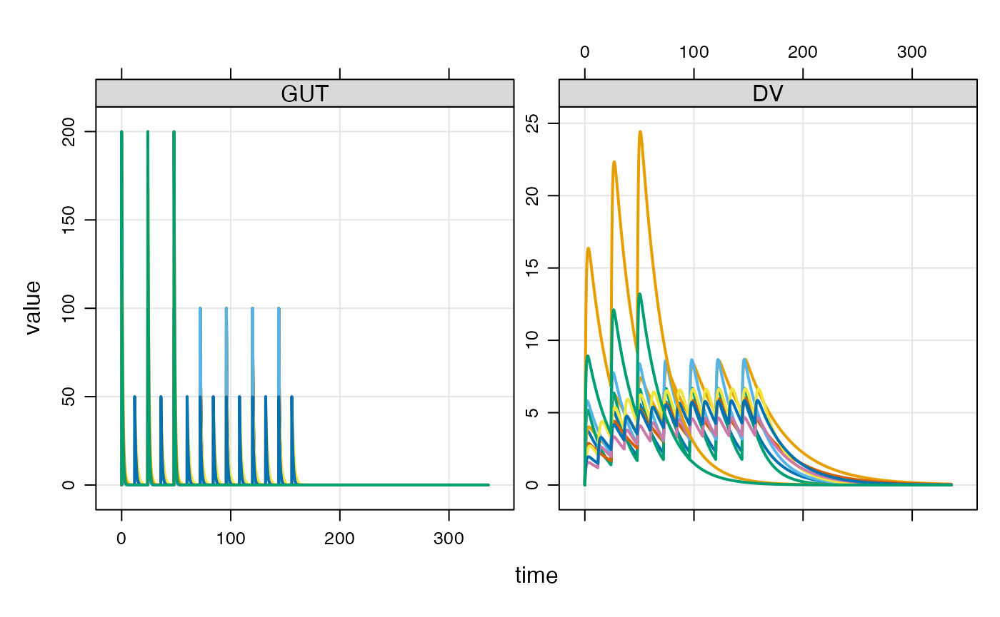

Introduction
Event objects are simple ways to implement PK dosing events into your model simulation.
Let’s illustrate event objects with a one-compartment, PK model. We read this model from the mrgsolve internal model library.
mod <- house(end = 216, delta = 0.1)Events
Events are constructed with the ev() function
e <- ev(amt = 100, ii = 24, addl = 6)This will implement 100 unit doses every 24 hours for a total of 7 doses. e has class ev, but really it is just a data frame
e. Events:
. time amt ii addl cmt evid
. 1 0 100 24 6 1 1. time amt ii addl cmt evid
. 1 0 100 24 6 1 1We can implement this series of doses by passing e in as the events argument to mrgsim

The events can also be implemented with the ev constructor along the simulation pipeline
Combine events
mrgsolve has operators defined that allow you to combine events. Let’s first define some event objects.
e1 <- ev(amt = 500)
e2 <- ev(amt = 250, ii = 24, addl = 4)
e3 <- ev(amt = 500, ii = 24, addl = 0)
e4 <- ev(amt = 250, ii = 24, addl = 4, time = 24)We can combine e1 and e3 with a collection operator
c(e1, e4). Events:
. time amt cmt evid ii addl
. 1 0 500 1 1 0 0
. 2 24 250 1 1 24 4mrgsolve also defines a seq() method that lets you execute one event and then a second event
seq(e3, e2). Events:
. time amt ii addl cmt evid
. 1 0 500 24 0 1 1
. 2 24 250 24 4 1 1Notice that e3 has both ii and addl defined. This is required for mrgsolve to know when to start e2.
Combine to create a data set
We can take several event objects and combine them into a single simulation data frame with the as_data_set function.
e1 <- ev(amt = 100, ii = 24, addl = 6, ID = 1:5)
e2 <- ev(amt = 50, ii = 12, addl = 13, ID = 1:3)
e3 <- ev(amt = 200, ii = 24, addl = 2, ID = 1:2)When combined into a data set, we get * N=5 IDs receiving 100 mg Q24h x7 * N=3 IDs receiving 50 mg Q12h x 14 * N=2 IDs receiving 200 mg Q48h x 3
data <- as_data_set(e1, e2, e3)
data. ID time cmt evid amt ii addl
. 1 1 0 1 1 100 24 6
. 2 2 0 1 1 100 24 6
. 3 3 0 1 1 100 24 6
. 4 4 0 1 1 100 24 6
. 5 5 0 1 1 100 24 6
. 6 6 0 1 1 50 12 13
. 7 7 0 1 1 50 12 13
. 8 8 0 1 1 50 12 13
. 9 9 0 1 1 200 24 2
. 10 10 0 1 1 200 24 2To simulate from this data set, we use the data_set function. First, let’s add an OMEGA matrix to this model:
